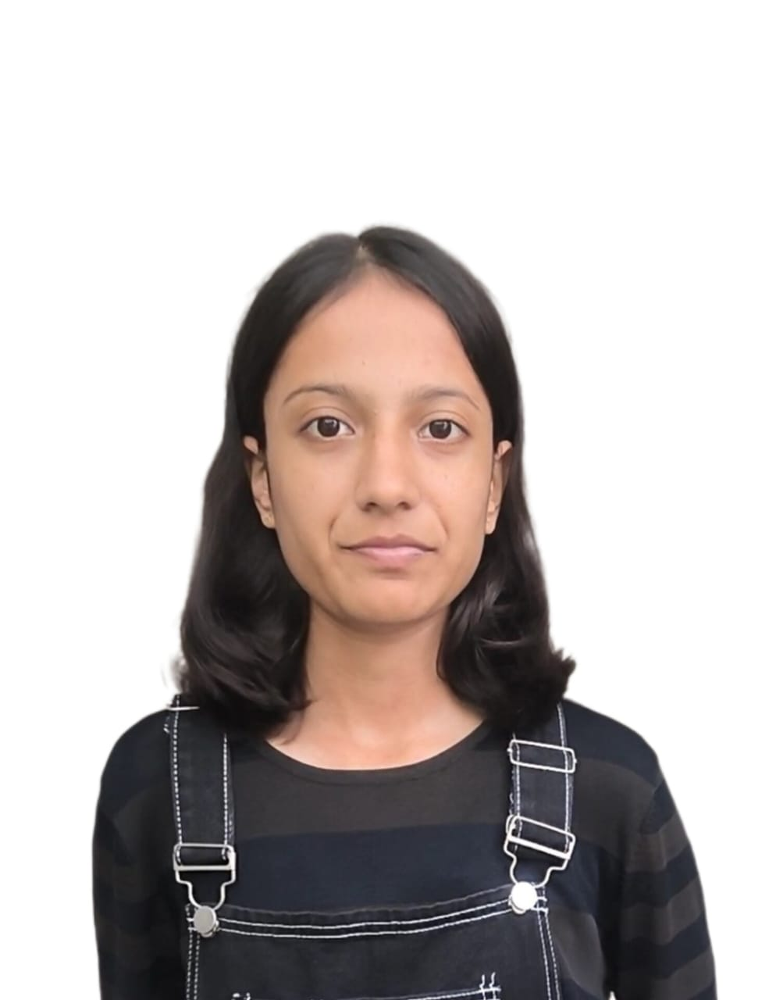

About Me

Hello! I'm Nandini, Hi! I'm Ahana, a first-year CS-AIML student at KIET, Ghaziabad (Batch 2025-2029). I enjoy coding, exploring machine learning, and building small projects that solve real problems. I am passionate about learning new technologies, improving my problem-solving skills, and preparing for internships at top tech companies. In my free time, I like sketching, traveling, reading. My goal is to become a skilled Al/ML engineer and create innovative software solutions.
- College: KIET, Ghaziabad (Batch 2025–2029)
- Course: CSE-AIML
- Interests: ML, Competitive Coding, Full-stack basics